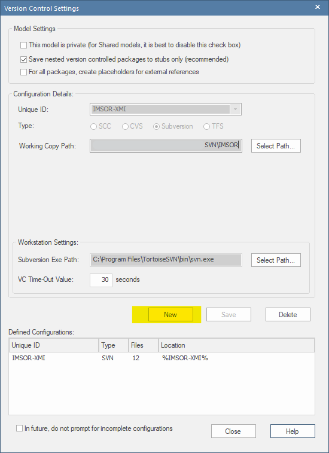
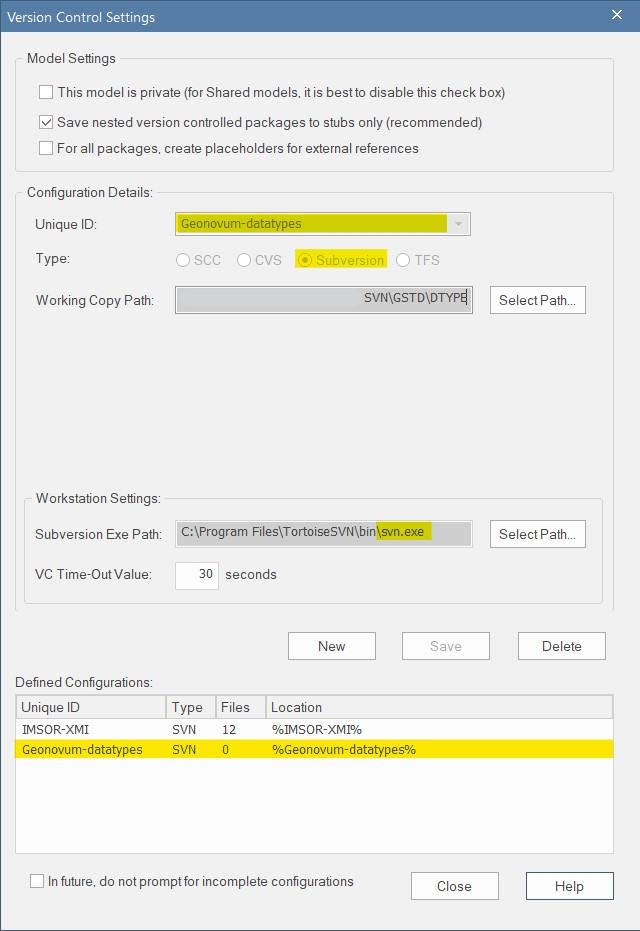
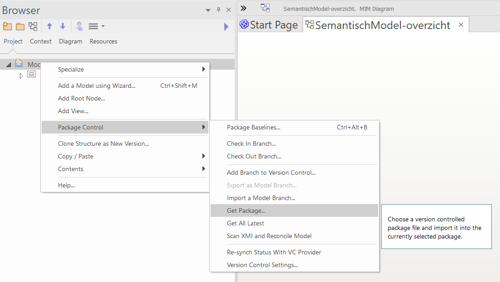
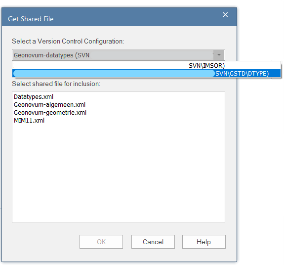
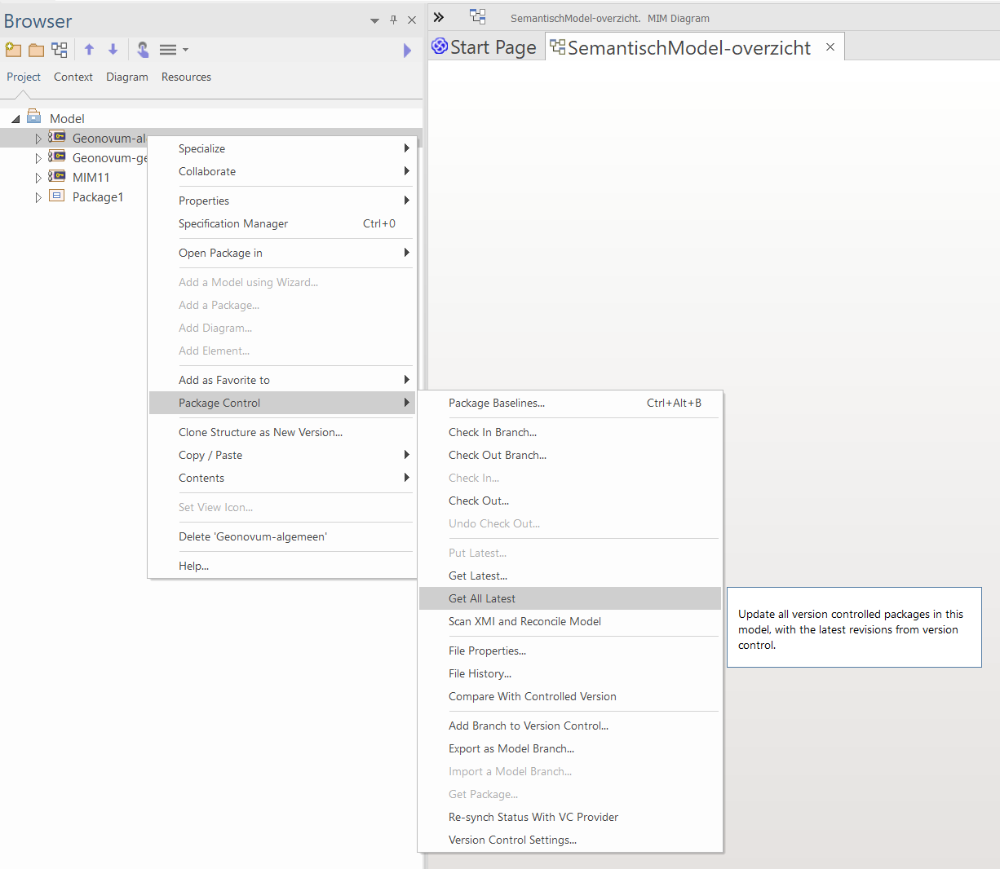
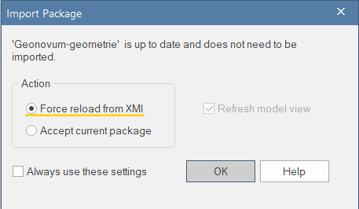

SVN - Importeren van een bestaand project in EA
Enterprise Architect versie: 15.2
Tortoise SVN Subversion versie: 1.14.1
Inleiding
Deze handleiding beschrijft hoe je in Enterprise Architect de packages van een bestaand project kunt importeren vanuit Subversion . Het stappenplan laat zien hoe je aan de hand van een EAP-bestand van het IMDiSGeo (IMSOR-XMI) een bestaand package toevoegt. In dit voorbeeld wordt het package met standaarddatatypes toegevoegd. Je kunt ook bestaande packages importeren in een nieuw (leeg) EAP-bestand. De methode is vrijwel identiek. De handleiding licht beide opties toe.
Inhoud
Dit document bevat de volgende onderdelen:
- Voorbereiding
- Stap 1: Configureer de VC-settings
- Stap 2: Haal het package op
- Stap 3: Haal de inhoud van het package op
Voorbereiding
MIM-toolbox importeren
Importeer de MIM-toolbox (instructie). Dit is met name relevant als het bestaande project ontwikkeld is met de MIM-toolbox. Door de toolbox vooraf te importeren, maakt EA automatisch een koppeling met de MIM-modelelementen in de packages die je gaat importeren.
Lokale folder aanmaken en koppelen
Zie hiervoor stap 2 en stap 3 uit de handleiding SVN - installeren voor EAP.
Packages importeren
Stap 1: Configureer de VC-settings
Configueer de version control settings van het bestaande project
- Ga naar
Configure>Project-VC. - Er verschijn nu een venster met de naam
Version Control Settings. - Bij een nieuw EAP-bestand is dit venster leeg, maar bij een bestaand EAP-bestand met packages onder versiebeheer moet je eerst op New klikken (zie onderstaande afbeelding).
- Doorloop daarna de onderdelen onder de afbeelding.

1.1 Model Settings:
- Check: "Save nested version" [...]
1.2 Configuration Details
- Check: "Subversion"
- Unique ID: Zelf gekozen unieke aanduiding voor de package onder version control. Suggestie:
Geonovum-{naam van het package}, bijvoorbeeld;Geonovum-datatypes, of:Geonovum-imkl. - Selecteer het Working Copy Path dat je gebruikt voor Subversion. Dit is de folder waar de lokale SVN-gegevens worden weggeschreven (zie: stap 2 bij lokale folder aanmaken en koppelen).
1.3 Workstation Settings
- Selecteer het Subversion Exe Path (de locatie van het bestand:
svn.exe), als dat nog niet is ingevuld. - Klik Save
1.4 Defined Configurations
- Controleer de Defined Configuration. Dit veld heeft nu één (nieuwe) ingevulde regel (zie afbeelding) met de Unique ID die je in onderdeel 1.2 hebt opgegeven.
- Klik Close

Stap 2: Haal het package op
- Klik met rechtermuisknop op Model en ga naar
Package Control>Get Package. - Selecteer bij Select a Version Control Configuration in:
Geonovum-datatypes. - Selecteer bij Select A Shared File For Inclusion:
Geonovum-algemeen.xml.

Note: Kies indien van toepassing het 'hoogtste' package in de hiërarchie van de package-structuur van het te importeren bestand. Op deze manier haal je ook in één keer alle subpackages op.
Note: Het niveau in de package-structuur van de project browser waar je klikt, bepaalt de plek waar het geimporteerde package terecht komt. Het komt daaronder. kies je model, dan komt het op het 'hoogste' niveau. Dit is soms relevant. Als iets wel, of juist niet onderdeel van het model moet zijn. Ook voor Imvertor is/was dit relevant... (controleren)

In de Project Browser verschijnt nu het package Geonovum-algemeen en indien aanwezig inclusief de subpackages. Het kan zijn dat de packages in dit stadium nog leeg zijn. Dat lossen we in de volgende stap op.
Stap 3: Haal de inhoud van het package op
Note: Via onderstaande stappen haal je de meest actuele versie op van de packages die onder versiebeheer staan. Als je met verschillende modelleurs aan een package werkt, is het verstandig om deze stappen tussentijds regelmatig uit te voeren.
- Klik met de rechtermuisknop op een package, bijv.
Geonovum-geometrie. - Klik op Ok
- Klik met de rechtermuisknop op het package
Geonovum-geometrie>Package Control>Get All Latest.

Er verschijnt een venster Get All Latest - Selecteer Import Changed Files Only (recommended) - Klik Ok.

Het package en de subpackages zijn succesvol geïmporteerd. Indien je meerdere basismodellen (of andere typen packages) wilt importeren, doorloop je stap 1 t/m 3 opnieuw.
Note: Het kan zijn dat de packages toch niet goed geïmporteerd worden. Doorloop dan onderstaande stappen.
- Klik met de rechtermuisknop op het package
«Geonovum-geometrie». - Klik op Ok
- Klik met de rechtermuisknop op het package
Basismodel>Package Control>Get Latest.
Er verschijnt een venster Import Package - Selecteer Force reload from XMI - Klik Ok.
